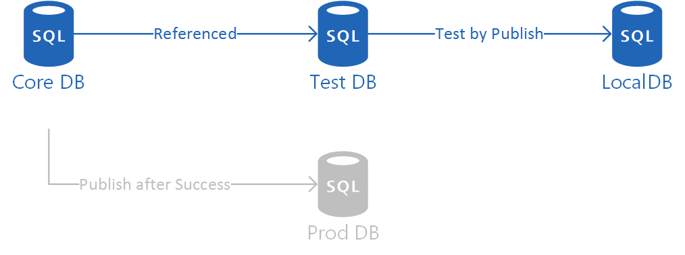
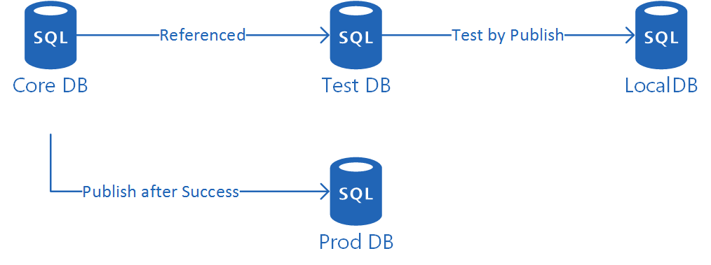

This post will give you a quick run-through of adding tSQLt to an existing database project destined for Azure SQL DB. This basically covers unit testing in SSDT and there is a lot of excellent info out there, so this focuses on getting you through the initial setup as quickly as possible. This post most especially relies on the information Ed Elliot and Ken Ross have published, so do check them out for more info on this topic!
Before we get started
Prerequisites
You should be comfortable with database projects and working with them in Visual Studio. You could do this for your first ever database project, but the learning curve might be a bit steep!
You need Visual Studio
This can work with Visual Studio 2010 and beyond. AFAIK you can’t use VS Code with database projects.
You should install the tool / extension SSDT-DevPack in Visual Studio.
Sample
Whilst I won’t be showing code in this, there is a companion sample database project. This is on GitHub and each key stage is shown by a branch of work. This means you can jump in at most stages and work from there. If you need some git advice, check out my quick git in 5 presentation.
The core DB is a super hero themed database.
Database Stored Procedure overview
Create a database project (or use an existing one!)
SSDT Unit Testing – core DB created
This will be our database that we deploy to Azure SQL so we don’t want lots of tests gunking up our production system. We’re going to keep only the necessary code in here for our actual workloads. Plus, Azure SQL DBs (currently) can’t have CLR which tSQLt relies upon!
Use an existing project, or use this sample repo, branch:stubs if you’d like to play along with my example.
Make sure your database project is under source control before you start. Not only should you already be doing it but it’ll save your bacon if you do something wrong during this!
Create a testing database project
We now need a project for holding our tSQLt code and our unit tests. The main method I could find is “deploy tSQLt to a database, then import into a database project”. For more info on this method, or to follow it, go to “Version controlling SSDT” in Ken’s useful post.
I’m lazy so I take a copy of an existing minimally-configured tSQLt database project and copy & paste it into the solution’s directory. I then change the relevant folder / file names and edit the .proj file to use these new names. Once that’s done, the Add Existing Project option can be used to bring it into the solution. Nab a copy from the sample repo, branch:stubsandblanktestingdb to have a go at this.
C&Ping a database project has the disadvantage that the tSQLt code is fixed to a given version, but at the time of writing this post, the last release was 10 months old.
Configure test DB project
SSDT Unit Testing – test DB created
For this system to work the test DB will need to take our core DB as part of itself so that we can write tests against the core objects, but do the testing separately. There’s a neat mechanism in database projects. To do this we add a database reference that puts the core DB as the same database.
We now need to get ready for doing some testing.
Create a Tests folder in the test DB project.
Then open one of your core DB stored procedures.
Navigate to Tools > SSDT Dev Pack > Create tSQLt class in the menu
Select your Tests folder in the popup directory browser
Repeat the opening of stored procedures and creating classes whenever you need to add unit tests for a procedure.
You will need to build your core DB if you haven’t already so that it’s dacpac is up to date and the test DB can get all the references.
Write some tests
Wow, after all that setup we can now actually do some testing! With the stored procedure from the previous step still open navigate to Tools > SSDT Dev Pack > Create tSQLt test in the menu.
This gives us a similar popup to the class window we saw. We need to create a test in the stored procedure class folder that tests for something specific.
Ed’s SSDT-DevPack gives us a good starting point for our tests but, obviously, it’s a generic placeholder. Consult the tSQLt docs for more on how to write unit tests.
I usually unit test expected good inputs, edge cases in business logic, expected bad inputs, past bugs / issues
Run our tests
SSDT Unit Testing – database unit tests run
To run our tests, we’re going to publish to LocalDB. By publishing to the LocalDB, the PostDeploy script gets kicked off and runs all the tests. The database publish will fail if any of the tests fail. Rinse and repeat until your code passes all your unit tests!
In my actual Azure SQL DB, I’ve got things like containerised users that aren’t compatible with LocalDB but thankfully, amending some of the deploy settings easily solves this. Ignore anything like users, credentials, and permissions in Publish … > Advanced … for the test DB deployment to LocalDB.
Publish for realsies
SSDT Unit Testing – core DB deployed to production
Once you’ve gotten your code to pass your unit tests, you can then safely deploy your core DB to dev / UAT / production etc. You can also extend this to do continuous integration and deployment if you wanted, instead of manual deployments.
C’est fini!
Extending things
This sample project used only takes you as far as writing unit tests for stub procedures – one’s that don’t actually do anything but return the inputs. This, of course, means they don’t serve any purpose. Check out the master branch as I develop it more and fold further features in it.